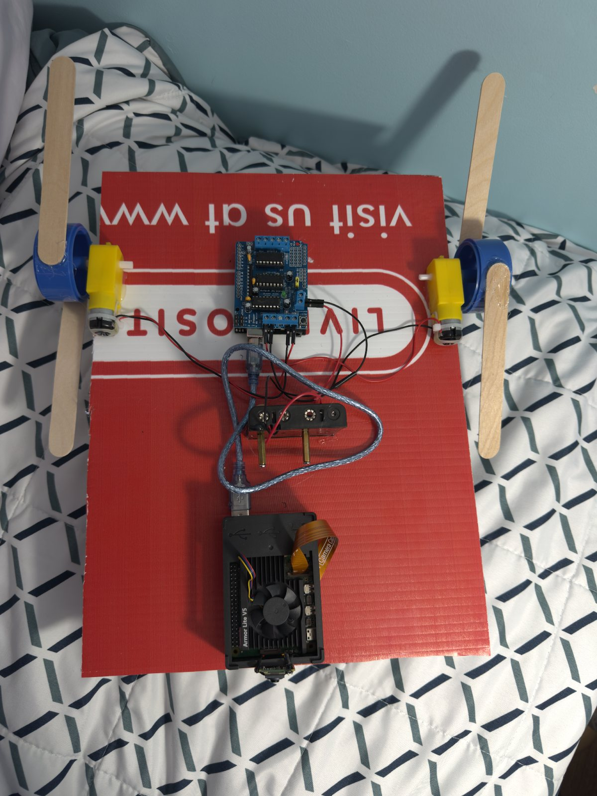
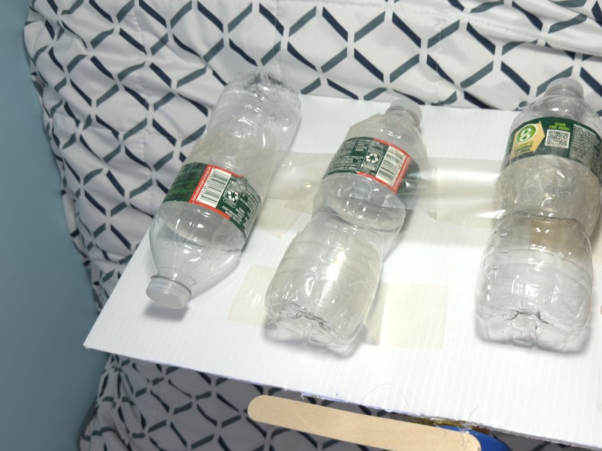
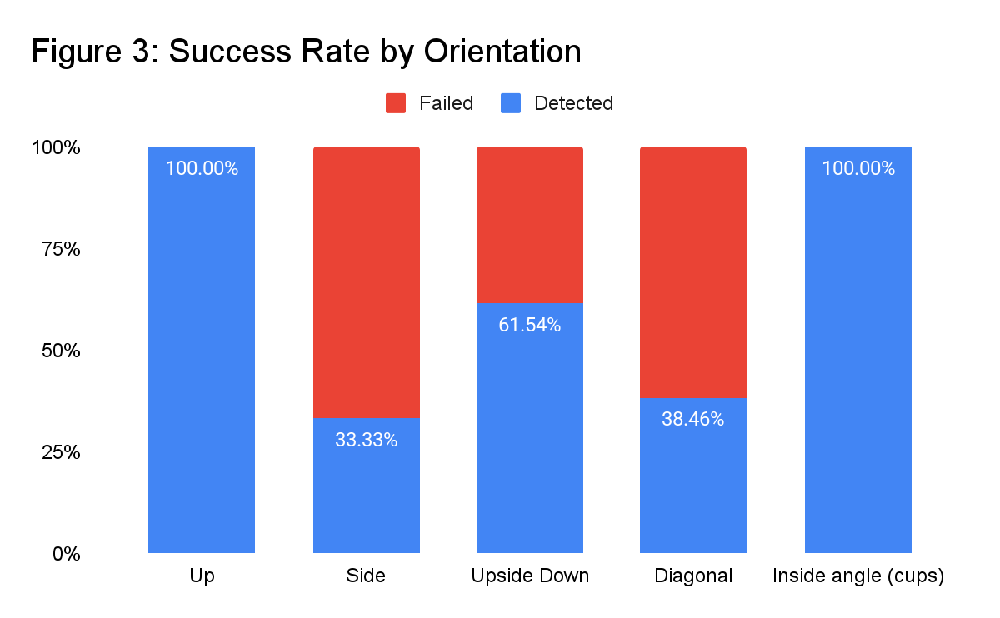
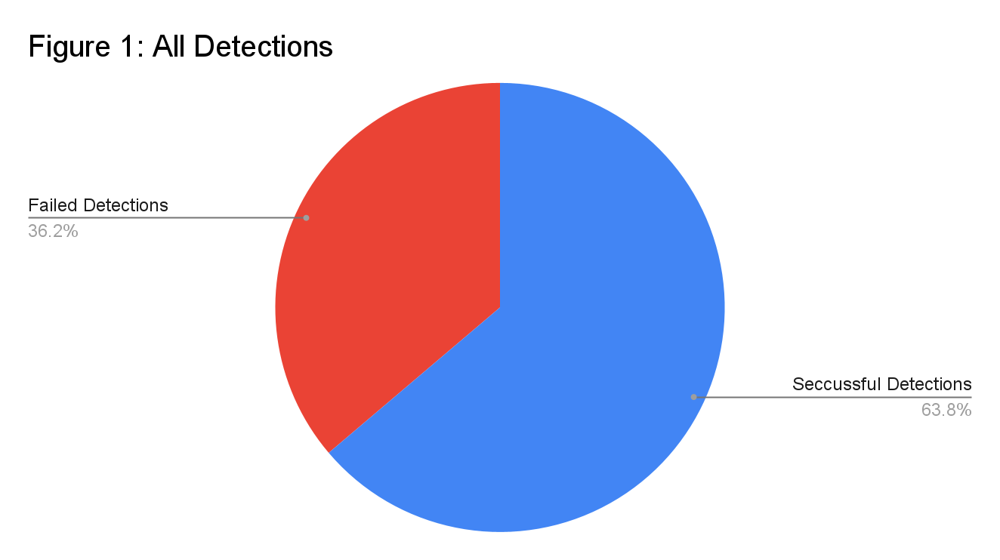
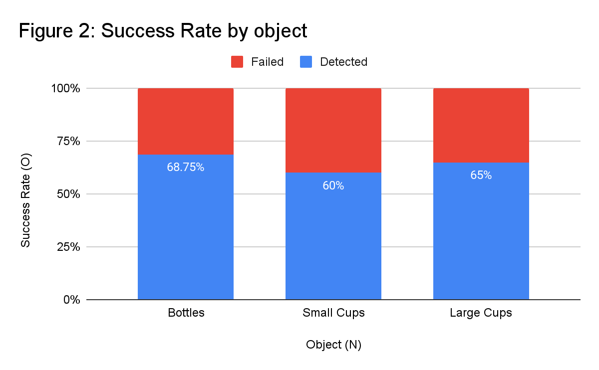

Robotics and edge AI · 2026
An AI boat that finds floating trash and steers to it
I built a small autonomous boat for about $250 that spots bottles and cups with an on-camera AI model and drives itself toward them. It reached every upright object in testing, and the misses showed where a stock AI model falls short.
- Cost
- ~$250total parts
- Upright objects
- 100%reached in testing
- Power
- ~15 Wtypical, under 27 W peak
- All orientations
- ~64%across nearly 60 trials

The problem and the goal
Trash floats on lakes, rivers and ponds. I wanted to test whether low-cost, on-device object detection could find a piece of floating trash and steer a boat to it, with no internet connection and no one at the controls.
I kept the scope narrow on purpose: detect and reach. The boat has no collector. Picking trash up was outside this project.
I built it in 10 days in February 2026 for the science fair. It advanced to the state science fair.
How it works
The boat has two brains. A Raspberry Pi 5 (a small single-board computer) decides where to go. An Arduino Uno (a simple microcontroller board) drives the motors. Keeping them separate keeps motor current away from the Pi.
Detection runs on the Raspberry Pi AI Camera, which uses a Sony IMX500 sensor that runs the model on the sensor chip itself. That is edge AI: no cloud, lower power and lower cost.
- CameraIMX500 runs MobileNet-SSD and reports each object's label, confidence and box
- Raspberry Pi 5Python reads the detections and picks a command
- USB serialOne character at 9600 baud: f, l, r or s
- Arduino UnoMaps the character to the L293D motor shield
- MotorsTwo gear motors turn the paddle wheels
On the Pi, a Python script starts rpicam-hello (the Pi's camera app) with the MobileNet-SSD settings file, reads its log, and uses a regular expression to pull out the label, confidence, horizontal position and box width of each detection. It then applies these rules:
| Condition | Action |
|---|---|
Label is person | Ignore. The boat never steers at people. |
| Confidence at or below 0.5 | Ignore |
| Box wider than 850 px | Too close: stop. This rule has the highest priority. |
| Box x position below 400 | Turn left |
| Box x position above 812 | Turn right |
| Anywhere in between | Go forward |
| No target for 0.8 seconds | Stop |
The script only sends a command when the state changes, so the serial line stays quiet while the boat holds a course. On the Arduino, turning works by stopping one side: to turn left, the left motor stops and the right one keeps driving.
This is the core of the decision logic from boat_ai.py:
if conf > 0.5:
last_seen_time = time.time()
# brake when too close, highest priority
if width > MAX_WIDTH:
if boat_state != "s":
ser.write(b's')
boat_state = "s"
continue # Skip steering entirely!
# steer left or right if object is not too close
if x_pos < LEFT_LIMIT:
new_state = "l"
elif x_pos > RIGHT_LIMIT:
new_state = "r"
else:
new_state = "f"
# only send command if state changed
if new_state != boat_state:
ser.write(new_state.encode())
boat_state = new_stateThe code was transcribed from my project notebook, which lost the original indentation, so the block structure was rebuilt from the logic.
The build
The hull is a sheet of corrugated plastic board floating on three empty water bottles. The motors run on AA batteries. The Pi is powered over a USB cable, so the boat runs tethered.
The plan was to use propellers, but I could not attach them to the motors. So I made paddle wheels from two old tires and popsicle sticks, one on each motor.


Ten-day timeline
| Date (2026) | Work |
|---|---|
| 13 Feb | Arduino accepts serial commands f, l, r, s and drives two motors. Fixed a wrong motor-library declaration. |
| 15 Feb | Flashed Raspberry Pi OS. AI camera running the demo model and detecting everyday objects. |
| 16 Feb | Python script on the Pi controls the motors over USB serial. |
| 18 Feb | Camera preview runs, but detection data not yet readable. Tried a YOLOv8 trash model; conversion failed. |
| 19 Feb | Found the correct way to read detection data. |
| 20 Feb | Motors follow the direction of detected objects. Full navigation script complete. |
| 21 Feb | Hull built and floated. Paddle wheels made. Motor wiring flipped to fix reversed turning. |
| 22 Feb | Detection trials in a bathtub, with a colored board so clear objects show against the white tub. |
What went wrong
The custom model would not convert
I first tried a YOLOv8 model (a popular object detection model) trained on trash. The IMX500 camera needs models converted to its own format, and the conversion kept failing. To stay on schedule I switched to the stock MobileNet-SSD model (a small, fast detection model) that ships with the camera. It is not custom trained. That limit later became the main finding of the project.
The boat turned the wrong way
After the hull was built, the boat turned the opposite way from the command it was given. The motor wiring was reversed. I flipped it and the turns matched the commands.
The power cable pulled the boat
The USB tether that powers the Pi dragged the boat to the left. Because the script keeps checking where the target is and correcting, the steering compensated for the drift.
Clear objects in a white tub
Clear bottles were hard to see against the white bathtub, so I added a colored board behind the test area.
Results
I tested bottles and cups in different positions across nearly 60 controlled trials. How the object was lying mattered much more than what the object was.
| Object orientation | Reached |
|---|---|
| Upright | 100% |
| Cup rim facing the boat (cups only) | 100% |
| Upside down | 61.5% |
| Diagonal | 38.5% |
| On its side | 33.3% |
| Overall | about 64% |



Power use was about 15 W in normal running and stayed under 27 W at peak.
Conclusion. A low-cost AI boat can find and reach floating trash. The limit is the model's training data, which is mostly upright objects, not the hardware or the control loop.
What I learned
- A working fallback beats a stuck plan. Dropping YOLOv8 for the stock model kept the project on schedule, and its weakness turned into a clear, measurable result.
- Splitting the system into a decision side and a drive side made each half easy to test alone. The Arduino took serial commands before the camera worked at all.
- Simple closed-loop control can absorb messy physics. The tether drift was handled by steering, not by a fix to the hull.
- A test setup is part of the experiment. The colored board in the tub changed what the camera could see.
What I would do next
- Get a custom model converted to the IMX500 format, trained on trash in many orientations, not mostly upright.
- Remove the USB power tether that pulled the boat off course.
Original research documents
These are the documents I wrote for the fair, exactly as submitted. I wrote them myself in February and March 2026.
Why a few details differ from this page. The documents are unedited. Their materials list shows the propellers I planned to use before switching to paddle wheels, and the report counts 56 trials while the charts include a few extra runs, which is why this page says nearly 60.
References
Sources cited in the report and notebook, as accessed in February 2026. A few have since moved or been taken down, and are marked.
- ClearBot. (n.d.). ClearBot Neo: Autonomous Marine Waste Collection. Link no longer available.
- Fulton, M., Hong, J., Islam, M., & Sattar, J. (2019). Robotic Detection of Marine Litter Using Deep Visual Detection Models. 2019 International Conference on Robotics and Automation (ICRA), 5752-5758. IEEE. doi.org/10.1109/ICRA.2019.8793975
- Lebreton, L., & Andrady, A. (2019). Future scenarios of global plastic waste generation and disposal. Palgrave Communications, 5(1), 6. doi.org/10.1057/s41599-018-0212-7
- Marine Biodiversity Science Center. (2025, April 30). These Ocean-Cleaning Robots Are Transforming Marine Debris Recovery. marinebiodiversity.ca
- Microsoft. (2023, June 14). How AI and cloud technology are cleaning the world's oceans. Microsoft News. Link no longer available.
- Raspberry Pi. (2025). AI Camera: getting started. Raspberry Pi documentation. Now published at raspberrypi.com/documentation.
- Raspberry Pi. (2025). rpicam-apps post-processing. Raspberry Pi documentation. Now published at raspberrypi.com/documentation.
- Raspberry Pi. (2025). rpicam common options. Raspberry Pi documentation. Now published at raspberrypi.com/documentation.
- Raspberry Pi. (n.d.). Raspberry Pi Documentation: Camera. raspberrypi.com
- Sony Semiconductor Solutions Group. (2025). Raspberry Pi AI Camera tutorial. developer.aitrios.sony-semicon.com
- dkrkamesh. (2021, November 14). Raspberry Pi meets Arduino: Connect Arduino and Raspberry Pi with serial USB cable. GitHub Gist. gist.github.com
- bjoernboeckle. (2024, February 22). L293D: Simple library to access a L293D motor driver. GitHub. github.com/bjoernboeckle/L293D
- W3Schools. (n.d.). Python Reference. w3schools.com